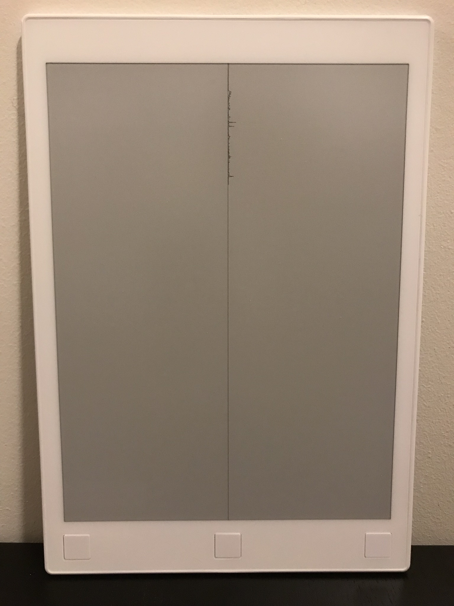

reMarkable Tablet Mods
For a few years I used a reMarkable tablet to record notes and read papers. It runs Linux and it's easy to SSH into the running system and make modifications so I tinkered around.
Amiga 500 Boot Screen
Website Traffic on Sleep Screen

Graph of traffic to my website as the sleep screen. Every day the server hosting my website would generate a new graph image using a little python script and then a script on my tablet would retrieve it and set it as the sleep screen.
Export Annotated PDFs
Surprisingly, although it was possible to scribble all over PDFs on the tablet it wasn't possible to export PDFs with the scribbles on top. So I wrote a small tool which retrieved the scribbles and PDFs separately from the reMarkable cloud and then combined them into annotated PDFs.